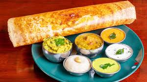

Masala Dhosa

Dosa is a popular south Indian breakfast where a crispy crepe made of fermented rice and lentil batter is served
with flavorful spiced potato curry. It is a wholesome meal in itself as it is served with potato masala, Coconut chutney and Sambar.
It is believed Masala dosa originated in Tuluva Mangalorean cusine, from Karnataka(source: Wiki). Udupi restaurants made this toothsome and delectable
food very popular all over India and now these are popular in many countries.
But making a good special restaurants style masala dosa at home needs experimenting a lot. A special restaurant style masala dosa is much more flavourful
than the regular crispy dosa we make at home. So the proportions of rice, dal, methi, chana dal and poha change here.
Steps:
- First, wash and soak dosa rice in vessel for 3 hours.
- Same way was urad dal + fenugreek seeds together in another vessel.
- After 3 hours, to begin with, drain water from urad dal + fenugreek seeds. Place in the blender.
- Grind with ice water adding little by little and equally important, in regular intervals to prevent
over heating and not all together. In other words, if you grind it right, it will have small bubbles seen in batter.
- Then, transfer to a large vessel enough to hold both batter.
- After that, place the rice, salt and cooked rice (if adding) in a mixie (blender).
- Likewise, using ice water, grind to a smooth batter. Do give time in between if it is hot and also add water carefully
without making it watery.
- Then, transfer it along with ground urad dal batter.
- After that, mix thoroughly and keep aside for fermentation.
- Eventually, it will take from 12 to15 hours for fermentation.
- To make dosa, firstly take required portion of batter in a mixing bowl. Then add very little water, say ¼ cup per 2 cups of batter.
- Mix really well to make dosa. It spreads easily and evenly in dosa pan when we add water to batter and mix well.
Masala Dosa Tutorial